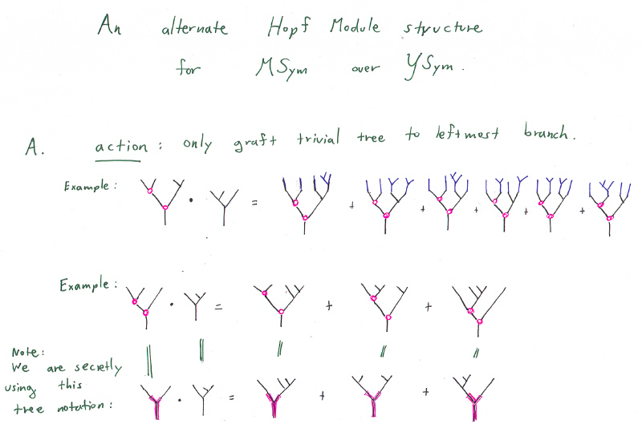
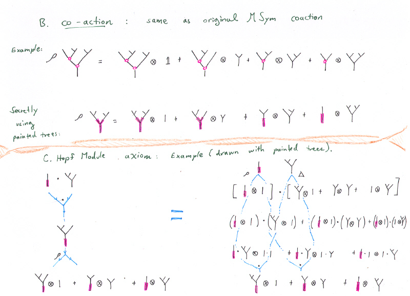
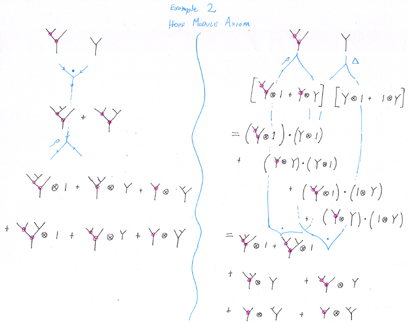
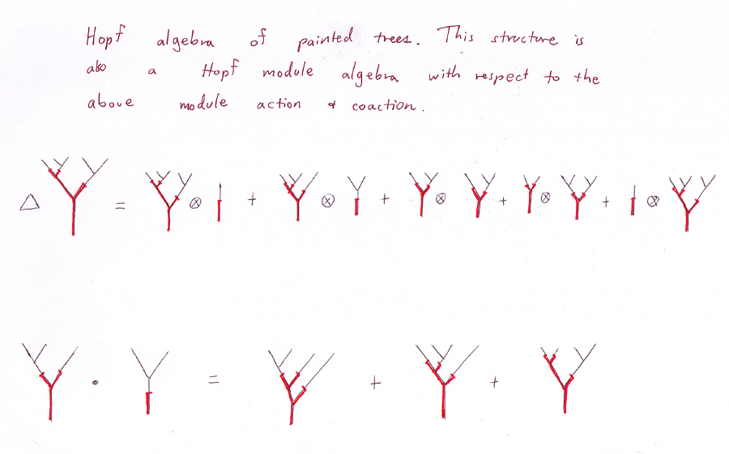
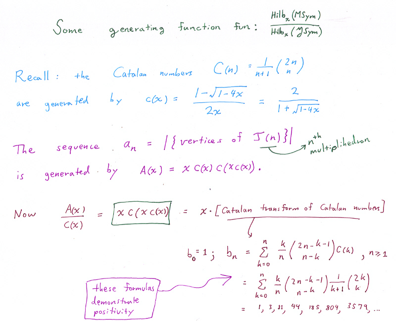
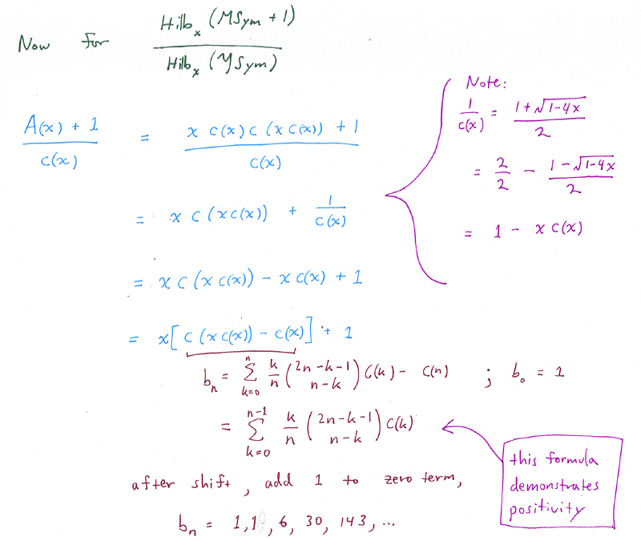

Part 5: Comparing Modules.
The module is also a Hopf algebra.
Generating function magic.
Back to Part 4.
On to Part 6.
Back to research page.






Source material for generating function magic includes: Paul Barry's paper on the Catalan transform.
Back to Part 4.
On to Part 6.
Back to research page.
Revision Date: